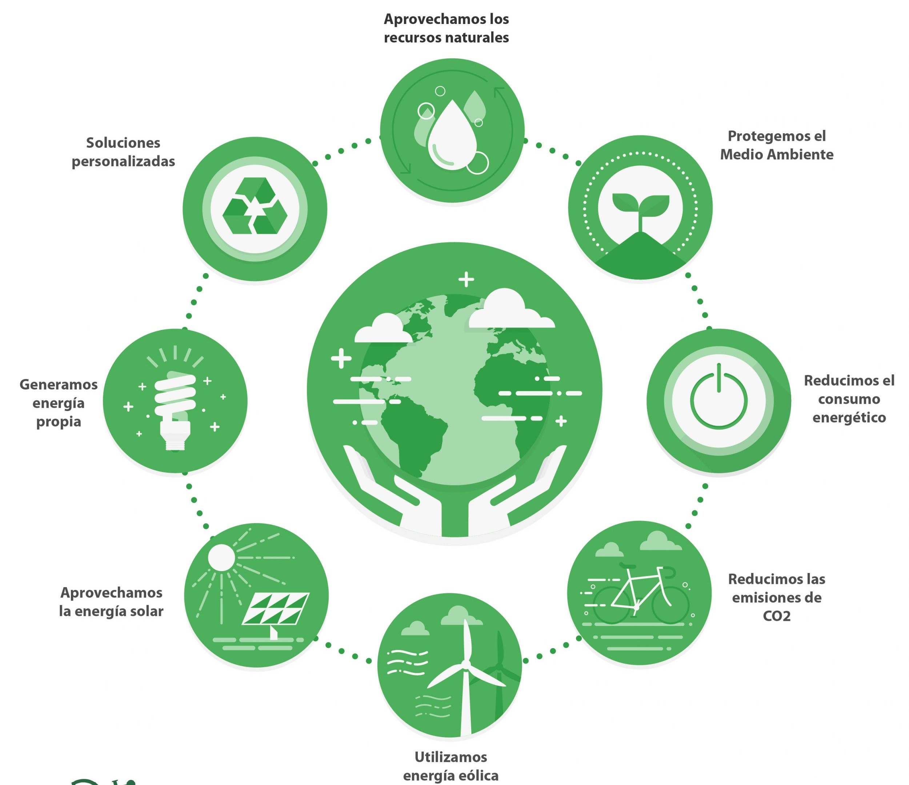
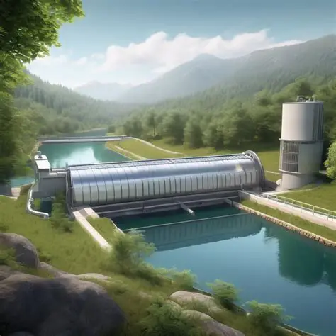

Fundamentos solares

Los paneles fotovoltaicos transforman la radiación solar en electricidad mediante el efecto fotovoltaico. Un sistema típico está compuesto por módulos, estructuras, inversores, cables y baterías opcionales. Su diseño debe considerar la irradiancia disponible, sombreado y temperatura ambiente. En zonas amazónicas se recomiendan módulos resistentes a la humedad y protecciones contra fauna.
La flexibilidad de los sistemas solares permite alimentar desde estaciones meteorológicas hasta microempresas productivas. La modularidad facilita crecer por etapas, lo cual reduce la inversión inicial y promueve la participación comunitaria en el proceso de instalación.
Generación eólica distribuida

La energía eólica se obtiene a partir del movimiento de rotores impulsados por el viento. Los aerogeneradores distribuidos pueden instalarse en zonas costeras o en colinas cercanas a los ríos principales. Es fundamental medir la velocidad del viento durante al menos un año para asegurar la viabilidad del proyecto y determinar el tipo de turbina.
En Brasil y Chile se han implementado cooperativas que combinan energía eólica con almacenamiento en baterías de ion-litio, logrando reducir tarifas locales en un 20%. Estas experiencias sirven como referencia para diseñar esquemas de gobernanza energética en Perú.
Bioenergía y economía circular
El aprovechamiento de residuos agrícolas, cáscaras de frutas y desechos forestales permite generar calor o electricidad mediante digestores anaeróbicos o gasificadores. Además de reducir emisiones de metano, los sistemas de biomasa entregan biofertilizantes que mejoran el rendimiento de cultivos locales.
Es indispensable contar con cadenas logísticas organizadas para recolectar los residuos y garantizar que la extracción no genere deforestación. Los manuales de la FAO recomiendan establecer comités comunitarios que vigilen la sostenibilidad y distribuyan los beneficios de la venta de energía.
Microhidro y microrredes
Las microcentrales hidroeléctricas utilizan turbinas de flujo cruzado o Pelton para convertir energía cinética del agua en electricidad. Son ideales para comunidades ubicadas junto a quebradas con pendientes pronunciadas. La variación estacional de caudales debe considerarse en el diseño para evitar interrupciones.
Integrar microhidro con bancos de baterías y sistemas solares crea microrredes híbridas capaces de operar de forma aislada (off-grid). Estas redes inteligentes incorporan controladores que priorizan cargas críticas como refrigeración de vacunas o laboratorios.
Resumen técnico
| Tecnología | Componentes clave | Retos de implementación |
|---|---|---|
| Solar fotovoltaica | Paneles, inversores, baterías, monitoreo remoto. | Limpieza periódica, protección ante humedad y vandalismo. |
| Eólica | Rotores, generador, torre, controlador de carga. | Requiere estudios de viento y mantenimiento especializado. |
| Biomasa | Digestores, gasificadores, sistemas de secado. | Gestión sostenible de residuos y logística de suministro. |
| Microhidro | Turbina, generador, canal de derivación, caseta de control. | Variabilidad hidrológica y permisos ambientales. |